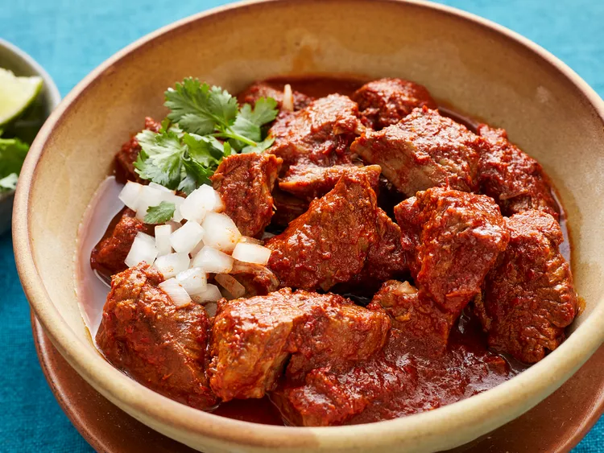

Birria Recipe
Home

Description
This birria recipe is a Mexican stew made with blended chile peppers simmered with beef stew meat. Very delicious! Serve with cilantro, lime, and chopped onion as condiments and Mexican rice or beans as side dishes.
Ingredients
- 5 dried Anaheim chile peppers, stemmed and seeded
- 5 guajillo chile peppers, stemmed and seeded
- water to cover
- 1/4 onion
- 1 tablespoon mixed spices, or more to taste
-
- 1 tablespoon salt, or to taste
- 3 pounds cubed beef stew meat
- 6 bay leaves
Steps
- Place Anaheim and guajillo peppers in a saucepan; cover with water and bring to a boil. Reduce heat to medium-low and simmer until tender, about 15 minutes. Set aside to cool for 5 minutes.
- Transfer chiles and water into a blender; add onion, mixed spices, and salt. Blend until smooth.
- Place stew meat in a large pot; stir in pureed chile mixture and add bay leaves. Cook over medium-low heat until meat is very tender, 3 to 5 hours.